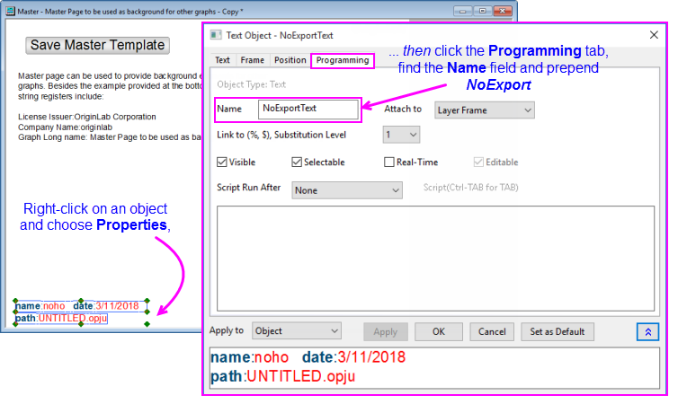

Ein Master-Seitenlayout für Diagramme erstellen
Master-Page-Layout
Origin stellt die Funktion Masterseite zur Verfügung, um die allgemeinen Anmerkungen für Ihre Diagramme zu vereinfachen. Verwenden Sie die Masterseite, um einen einheitlichen Hintergrund, ein Firmenlogo oder andere Beschriftungen und Bilder in allen oder in ausgewählten Diagrammen Ihres Projekts anzuzeigen.
Vorlage MASTER.OTPU verwenden
- Wählen Sie im Menü Datei: Neu: Masterseite. Die Vorlage Master.otpu wird geöffnet.
 |
Wenn Sie sich beim Auswählen des Menübefehls nicht im Hauptverzeichnis des Projekts befinden, werden Sie gefragt, ob Sie in das Hauptverzeichnis wechseln möchten.
Hinweis: Wenn sich die Masterseite im Projekthauptordner befindet, wird das Masterelement automatisch im Diagramm mit den gleichen Dimensionen gezeigt (ab Origin 2018b). Wenn die Mastervorlage sich nicht im Hauptordner des Projekts befindet, müssen Sie für das existierende Diagramm das Diagrammfenster aktivieren und auf die Schaltfläche Aktualisieren klicken, um beim Erstellen oder Aktualisieren einer Mastervorlage die Master Items zu zeigen.
|
Das Fenster Masterseite zeigt:
- Passen Sie die Mastervorlage benutzerdefiniert an.
- Die Masterseite sollte die Eigenschaften und Objekte enthalten, die Sie in anderen Diagrammfenstern anzeigen lassen möchten:
- Hinweis: Die Kommentare, die unter der Schaltfläche Mastervorlage speichern gezeigt werden, sind "verborgen" und werden nicht auf Ihre Diagrammfenster angewendet.
- Klicken Sie auf die Schaltfläche Mastervorlage speichern.
- Wenn Sie speichern, wird die Mastervorlage im Anwenderdateiordner als "Name des aktiven Fensters".otpu
(z. B. "C:\Users\YourName\Dokumente\OriginLab\Anwenderdateien\Master.otpu") gespeichert.
- Wenn Sie auf die Schaltfläche Drehen klicken, um zu Hochformat zu wechseln, ändert sich der Vorlagenkurzname in Portrait. Sie können dann die Vorlage Portrait.otpu speichern.
|
Sie könnten das Hilfsmittel Text verwenden, um Projekt- und Systeminformationen zu Ihrer Mastervorlage als statische Textobjekte hinzuzufügen, aber da es bei einer Vorlage um ihre Wiederverwendung geht, ziehen Sie doch die "Softcodierung" der Informationen in Ihren Textbeschriftungen in Erwägung. Weitere Informationen finden Sie unter folgenden Themen:
|
Anzeige der Master Items bestimmen und auf Ebene der Grafikseite (Fenster) exportieren
Wenn Sie Ihre Mastervorlage eingerichtet haben, werden standardmäßig die Master Items im Origin-Arbeitsbereich für alle Diagramme mit den gleichen Dimensionen wie Ihre Vorlage gezeigt. Master Items werden auch auf Diagramme angewendet, die Sie exportieren, kopieren und drucken.
Wenn Sie die Master Items im Arbeitsbereich nicht zeigen möchten und auch nicht auf Ihre exportierten, kopierten oder gedruckten Diagramme anwenden möchten, können Sie ihre Verwendung im Dialog Details Zeichnung deaktivieren:
- Wählen Sie Format: Seite, um den Dialog Details Zeichnung auf Ebene der Grafikseite zu öffnen.
- Wählen Sie die Registerkarte Anzeige.
- Deaktivieren Sie das Kontrollkästchen Master Items verwenden. Die Verwendung der Master Items wird nur für diese Grafikseite deaktiviert. Weitere Seiten, für die Master Items verwenden aktiviert ist, werden nicht beeinflusst.
Allgemeine Elemente zu einer MS Word- oder PowerPoint-Datei hinzufügen
Bearbeiten: Seite kopieren kopiert normalerweise ein Origin-Diagrammobjekt in die Zwischenablage. Wenn das Objekt in ein MS Word-Dokument eingefügt wird und der Anwender danach doppelt auf das Diagrammobjekt klickt, wird das Diagramm in einer OLE-Instanz von Origin geöffnet, wo es bearbeitet werden kann. Wenn die Master Items im Diagramm vorhanden sind, platziert Bearbeiten: Seite kopieren ein Bildobjekt (EMF) in der Zwischenablage, nicht das übliche Diagrammobjekt.
Wenn Sie ein bearbeitbares Origin-Diagrammobjekt in Ihrem MS Word-Dokument einbetten möchten, deaktivieren Sie das Kontrollkästchen Master Items verwenden im Dialog Details Zeichnung, bevor Sie Bearbeiten: Seite kopieren wählen. Alternativ können Sie die LabTalk-Systemvariable @GMC = 1 festlegen. Informationen zum Ändern von Origins Standardverhalten mit Hilfe von Systemvariablen finden Sie unter Origin mit Hilfe von Systemvariablen benutzerdefiniert anpassen.
Auch Origins Funktion Grafiken an PowerPoint senden unterstützt die OLE-Einbettung von Master Items in einer PowerPoint-Präsentation nicht. Um allgemeine Elemente (Items) zu Origin-Grafiken in einer PowerPoint-Präsentation hinzuzufügen, können Sie:
- einen Folienmaster in PowerPoint erstellen, der Ihre "Master Items" enthält.
- eine minimale PowerPoint-Datei mit einer "Master Items"-Folie erstellen, die Sie auswählen können, wenn Sie Grafiken an PowerPoint senden in Origin auswählen (es ist nicht notwendig, einen Folienmaster zu erstellen).
- Grafiken an PowerPoint senden und Grafiken als Bild einfügen.
-
|
Die gleichen Beschränkungen der Master Items und eingebetteten Diagramme gelten für die Origin-Apps Send Graphs to Word and Send Graphs to PowerPoint. Fügen Sie Diagramme, die Master Items enthalten, als Bild ein und nicht als Eingebettetes Objekt.
|
Anzeige des Master Items in Origin-Sitzung oder -Projekt bestimmen
Sie können, ohne Master Items verwenden für jedes Diagrammfenster zu deaktivieren, ihre Anzeige in der Origin-Sitzung oder im Origin-Projekt ein- oder ausschalten. Dies ist einfach ein Wechsel der Arbeitsbereichsanzeige und beeinflusst weder den Export noch den Druck (siehe Hinweise):
- Aktivieren Sie ein Diagrammfenster und platzieren Sie ein Häkchen neben Ansicht: Zeige: Bildschirmanzeige Master Items, um die Master Items zu zeigen.
- Entfernen Sie das Häkchen neben Ansicht: Zeige: Bildschirmanzeige Master Items, um die Master Items zu verbergen.
|
Hinweise:
- Dieser Menübefehl steht nicht zur Verfügung, wenn das Kontrollkästchen Master Items verwenden im Dialog Details Zeichnung für das aktive Fenster deaktiviert wurde.
- Die Einstellung Ansicht: Master Items zeigen wird mit dem Projekt gespeichert.
- Das Deaktivieren des Kontrollkästchens neben Ansicht: Master Items zeigen verbirgt Master Items nicht in kopierten, gedruckten oder exportierten Diagrammen.
|
Master Items selektiv aus Arbeitsbereich ausschließen, exportieren oder drucken
Es gibt eine Methode, um Master Items selektiv im Arbeitsbereich und in Ihren exportierten oder gedruckten Seiten auszuschließen. Jedes Objekt - Textobjekt, gezeichnetes Objekt, Schaltflächenobjekt etc. -- auf einer Grafikseite hat einen Namen. Dieser Name ist im Allgemeinen auf der Registerkarte Programmierung des Dialogs Eigenschaften dieses Objekts zu finden.
Wenn Sie nicht möchten, dass ein besonderes Masterseitenobjekt im Arbeitsbereich angezeigt wird oder auf der exportierten bzw. gedruckten Seite eingeschlossen wird, sollten Sie das Fragment "NoExport" vor den Objektnamen setzen (z. B. "NoExportObjectName").
- 
Weitere Hinweise zur Masterseite
- Um ein Diagramm, basierend auf der Vorlage Master.otpu, über ein LabTalk-Skript zu öffnen, verwenden Sie den Befehl:
win -t plot master Master;
Hinweis: Dieses Skript öffnet das Fenster der Masterseite im aktiven Ordner. Wenn der aktive Ordner nicht der Hauptordner ist, müssen Sie das Diagrammfenster jeweils aktualisieren, um die Master Items zu zeigen.
- Wenn das Fenster der Masterseite über Datei: Neu: Masterseite geöffnet wird, ist die Standardausrichtung Querformat. Wenn Sie die Vorlage im Hochformat verwenden oder speichern möchten, klicken Sie auf die Schaltfläche Drehen, um Seitendimensionen zu wechseln. Außerdem wird der Kurzname der Seite in Portrait geändert. Sie können diese Vorlage unter Portrait.otpu speichern. Zusätzlich können Sie Ihre Seitenausrichtung verändern, indem Sie das Menü Datei: Seite einrichten verwenden.
- Masterelemente werden nur in Diagrammseiten der gleichen Dimensionen als Vorlage gezeigt. Die Schaltfläche Dimension auf alle Diagramme anwenden wendet die Seitendimensionen der Mastervorlage auf alle Diagramme der gleichen Ausrichtung an.
- Sie können auch Master Items auf Layoutseiten anzeigen. Standard ist, dass das Kontrollkästchen Master Items verwenden auf der Layoutseite des Dialogs Details Zeichnung und im Menü Ansicht: Zeige: Bildschirmanzeige Master Items aktiviert ist.